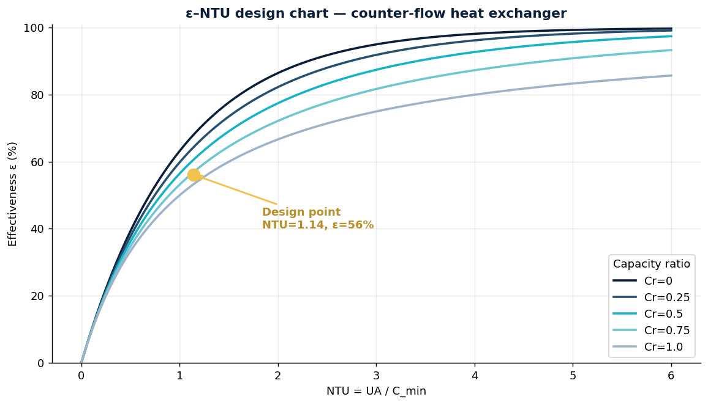
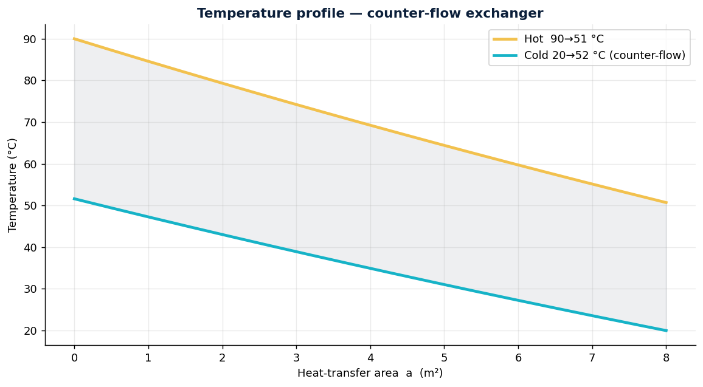

Design and rating of a water-to-water counter-flow heat exchanger using the ε-NTU method, independently cross-checked against LMTD, with real fluid properties (CoolProp) and a design curve that shows the area–performance trade-off. A fully computational thermodynamics study — no lab required.
Cool a hot process water stream (90 °C, 2.0 kg/s) using cooling water (20 °C, 2.5 kg/s) in a counter-flow exchanger with U = 1200 W/m²·K and 8 m² of area. Find the heat duty, outlet temperatures and effectiveness — and how the area would have to grow for a colder outlet.
The effectiveness of a counter-flow exchanger depends only on NTU and the capacity ratio Cr:


| Quantity | Value |
|---|---|
| Effectiveness ε | 56.1 % |
| Heat duty Q (ε-NTU) | 330.3 kW |
| Heat duty Q (LMTD check) | 330.3 kW |
| Hot outlet temperature | 50.7 °C |
| Cold outlet temperature | 51.6 °C |
| Log-mean temperature difference | 34.4 °C |
Inverting the problem (required area for a target outlet) reveals diminishing returns: because effectiveness flattens at high NTU, cooling the hot stream below ~50 °C costs disproportionately more area. This is the curve that drives the sizing decision.